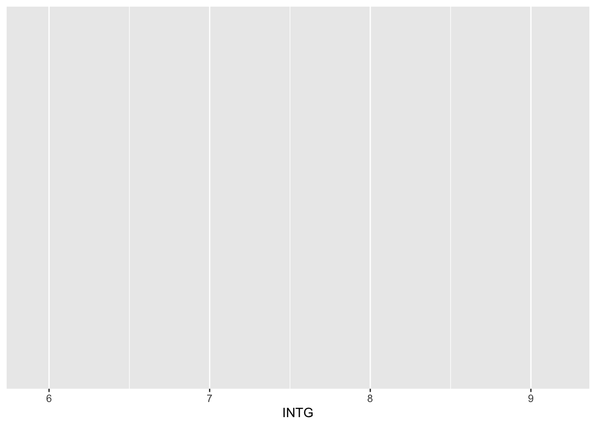
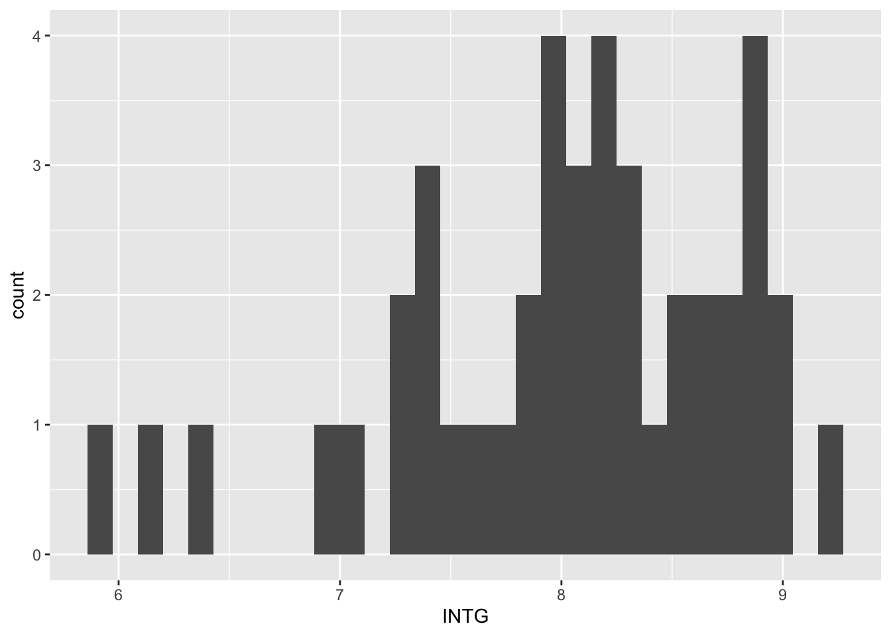
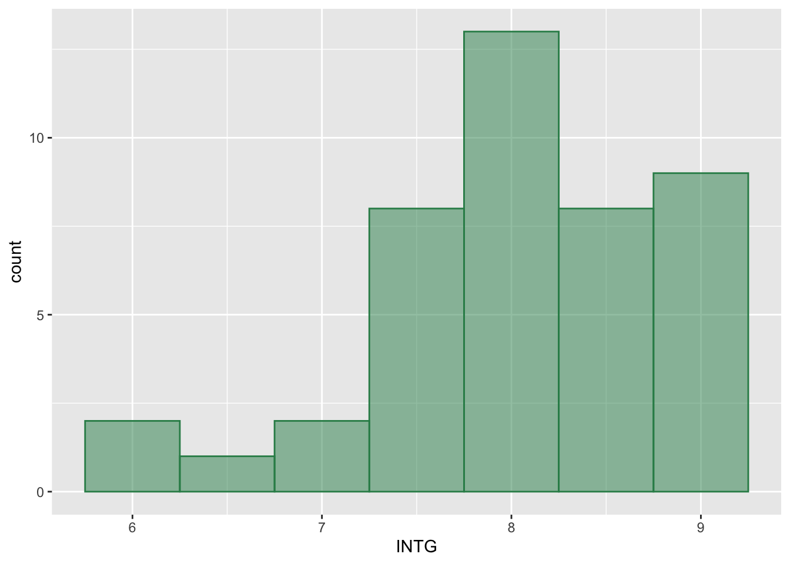
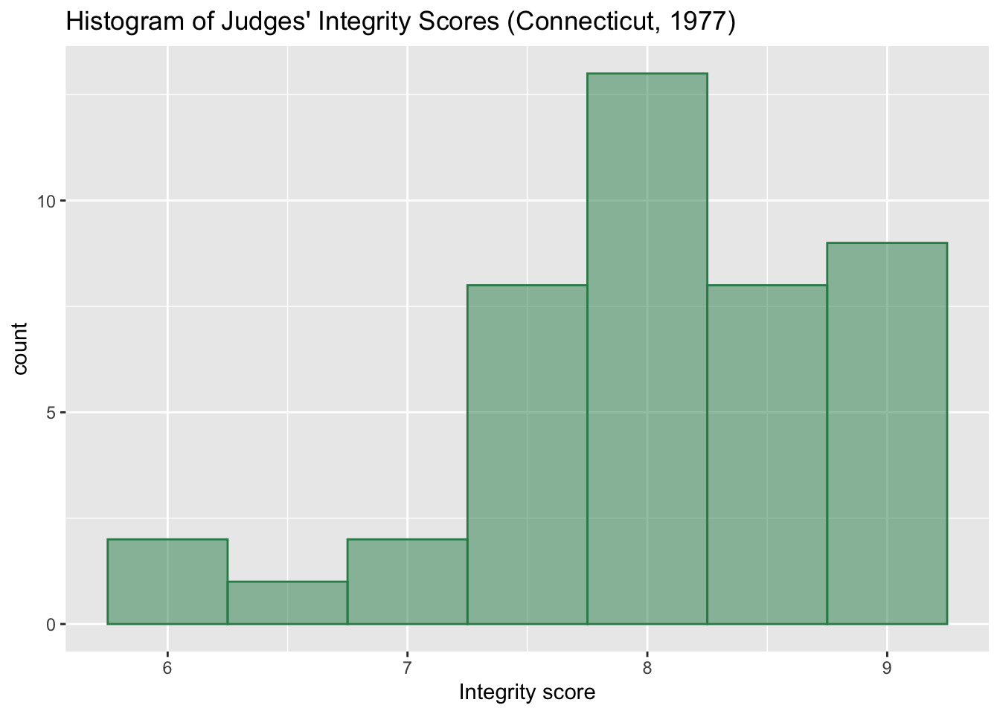
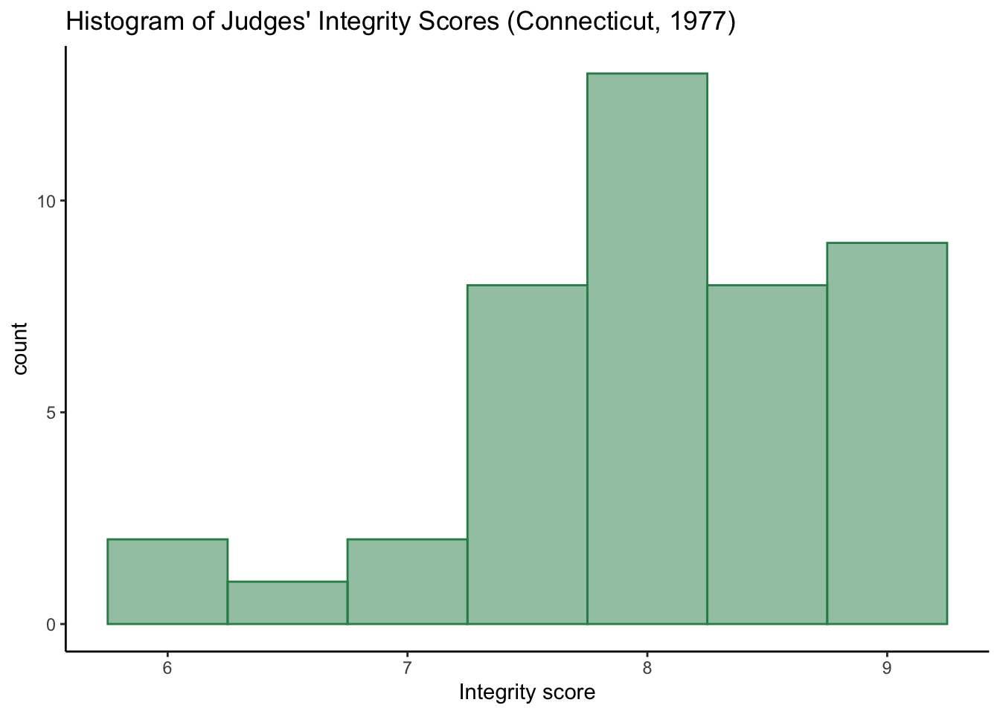

function(arg1, arg2, arg3, ...)Tidyverse I
Tidyverse I: Data Wrangling
Review of Terminology
There are two ways of viewing Quarto documents: source mode and visual mode. Unlike a Word document, what you see while editing a document is not exactly what you’ll see in the final version of the document. Converting a Quarto document into a clean HTML, Word, or PDF file is called rendering, and you can render your document at any time by clicking the render button at the top of the RStudio window. When your document renders, your code will run from top to bottom, in order. This means that if you create an object lower down on your script and then refer to that object above it, you will get an error when you render your file. This is true even if your code ran perfectly as you wrote it.
There are essentially two types of commands you can enter in R. The first is to store information. This involves creating or modifying an object (and objects can be anything from single values to dataframes to regression models to plots). The second type of command is to retrieve information, or equivalently, to print the value of an object. As we’ve seen, value is not necessarily numeric–it could be a table, a plot, a list of strings, or a Boolean value (whether a statement is true or false). We store information using an assignment operator (<- or =) and retrieve information by simply typing the expression we want R to evaluate.
Almost all of our work in R will use functions. Functions are effectively shortcuts for common tasks in programming/data analysis. They can take any number of arguments, or inputs (including zero!) and return an object as an output. In general, the order of the arguments matters. Some arguments have defaults–that is, if you don’t specify what values you want them to take, R will use its default. This is the basic structure of code using a function:
Download the script here
Installing and Loading Packages
R is powerful in part because it is very flexible. Most data analysis tasks can be done several different ways in R, depending on your preferences and the characteristics of your data set. This flexibility comes from the ability to load packages with additional functions. Today, we’ll be talking about “tidyverse,” a suite of packages used for data wrangling and visualization. We can think of tidyverse as a “mega-package” that contains several smaller packages, including “dplyr” and “ggplot2.” Usually, it makes sense to load the entire tidyverse at once so that we don’t have to worry about which functions belong to each specific package within tidyverse.
If you don’t have tidyverse installed, we’ll have to do that first.
# install.packages("tidyverse") # to run this code, remove the # at the beginningThis line of code only needs to be run once on your device. After you’ve installed tidyverse, it lives on your machine forever.
Once a package is installed, we have to tell R that we want to use it in this specific R script/Quarto document. This is called loading the package, and we usually do it with the “library” function. Some packages come preloaded in every R session–these are called “base R.”
library(tidyverse)── Attaching core tidyverse packages ──────────────────────── tidyverse 2.0.0 ──
✔ dplyr 1.1.4 ✔ readr 2.1.5
✔ forcats 1.0.0 ✔ stringr 1.5.1
✔ ggplot2 3.5.1 ✔ tibble 3.2.1
✔ lubridate 1.9.3 ✔ tidyr 1.3.1
✔ purrr 1.0.2
── Conflicts ────────────────────────────────────────── tidyverse_conflicts() ──
✖ dplyr::filter() masks stats::filter()
✖ dplyr::lag() masks stats::lag()
ℹ Use the conflicted package (<http://conflicted.r-lib.org/>) to force all conflicts to become errorsNote that we don’t need quotation marks around the name of the package in the library function, even though we do need them in install.packages. Minor formatting choices like this matter a lot in R.
When we load tidyverse, we get the above output. This tells us the names of all of the packages within tidyverse that we’ve loaded. It also warns us that two functions in dplyr have the same names as functions in stats, which is part of base R. This is not a problem for us. By default, if two functions in different packages have the same name, the one that was loaded most recently will be used.
Now that we’ve loaded tidyverse, let’s work with some data.
Load and Examine Data
data(USJudgeRatings) # load built-in data set
head(USJudgeRatings) # view the first 6 rows of data CONT INTG DMNR DILG CFMG DECI PREP FAMI ORAL WRIT PHYS RTEN
AARONSON,L.H. 5.7 7.9 7.7 7.3 7.1 7.4 7.1 7.1 7.1 7.0 8.3 7.8
ALEXANDER,J.M. 6.8 8.9 8.8 8.5 7.8 8.1 8.0 8.0 7.8 7.9 8.5 8.7
ARMENTANO,A.J. 7.2 8.1 7.8 7.8 7.5 7.6 7.5 7.5 7.3 7.4 7.9 7.8
BERDON,R.I. 6.8 8.8 8.5 8.8 8.3 8.5 8.7 8.7 8.4 8.5 8.8 8.7
BRACKEN,J.J. 7.3 6.4 4.3 6.5 6.0 6.2 5.7 5.7 5.1 5.3 5.5 4.8
BURNS,E.B. 6.2 8.8 8.7 8.5 7.9 8.0 8.1 8.0 8.0 8.0 8.6 8.6view(USJudgeRatings) # view the full dataframe in a new window
?USJudgeRatings # view the documentation for this data setEach row corresponds to one of 43 state judges in Connecticut in 1977. The columns indicate the average rating of each judge by a group of lawyers. Note that the column names are short and are not particularly intuitive. Later, we’ll rename the columns to be clearer.
This data set is an example of tidy data, a format that makes data easier to work with. In tidy data, each row corresponds to an observation (a country, a survey respondent, a year, or any other unit of observation). Each column corresponds to a variable that was measured, and each cell is one measurement. Tidy data sets can have all kinds of different variables–strings, Boolean values (TRUE/FALSE), integers, and even missing values. In this case, all of our variables happen to have the type “double,” which refers to a rational number.
While tidy data are convenient to work with, other ways of organizing data exist. If you find a data set with another organization structure, you will have to do some work to get it into a more usable format.
Data Wrangling
The full name of the data set is a bit clunky. Let’s create a copy with a simpler name. While we’re at it, we can work on renaming the variables.
judges <- USJudgeRatings # create a copy of USJudgeRatings with the name judges
judges_renamed <- judges %>% # load the dataframe judges
rename(contacts = CONT) # rename the variable currently called "CONT" to "contacts"The “rename” function is an example of a dplyr “verb.” Verbs are actions we apply to dataframes.
Notice the symbol %>% after the name of the dataframe. This is called a “pipe,” and you may also seen it written |>. Pipes take some time to get used to, but they make R code a lot more readable. Essentially, the object before the pipe (usually a dataframe) is treated as the first argument of the function that comes after it. The following line of code is equivalent to the one shown above:
judges_renamed <- rename(judges, contacts = CONT)
Exercise
Rename the rest of the variables to more sensible names. In general, good variable names are in lowercase and do not have spaces or special characters. If you need to use two or more words, separate them with an underscore rather than a space. A variable name should succinctly communicate what the variable measures.
Other dplyr verbs include the following:
arrange: sort dataframe by the values of one or more variables
filter: keep only the rows for which a particular statement is true (e.g., contacts > 7)
select: keep only the listed columns
mutate: add a variable which is a function of other variables in the dataframe
summarise (or summarize–both spellings are equivalent): create a simple summary table
It’s possible to do several verbs at once using pipes. For example, the following code filters out some rows of data and then computes the mean integrity and diligence scores for just those rows.
judges_renamed %>%
filter(contacts > 7) %>% # keep the rows for which contacts > 7 and remove the rest
summarise(integrity = mean(INTG), # compute the mean of the integrity score
diligence = mean(DILG)) # compute the mean of the diligence score integrity diligence
1 8.011111 7.766667If we want a summary of all of the variables in the data set, we can use “summarise_all.”
judges_renamed %>%
summarise_all(mean) contacts INTG DMNR DILG CFMG DECI PREP FAMI
1 7.437209 8.02093 7.516279 7.693023 7.47907 7.565116 7.467442 7.488372
ORAL WRIT PHYS RTEN
1 7.293023 7.383721 7.934884 7.602326
Exercise
Last time, we learned several functions that can be used to summarize data, including mean, median, min, and max. Try summarizing using a function other than mean.
Let’s practice using a few more dplyr verbs:
judges_revised <- judges_renamed %>%
select(contacts, INTG, DMNR, DILG, RTEN) %>% # select five columns
mutate(high_integrity = if_else(INTG > 8, 1, 0)) # create a variable called
# "high_integrity" and give it the value 1 if integrity is above 8 and 0 otherwise
judges_revised %>%
group_by(high_integrity) %>% # separate the following summary into two rows based
# on whether the integrity score is higher than 8.
summarise_all(mean)# A tibble: 2 × 6
high_integrity contacts INTG DMNR DILG RTEN
<dbl> <dbl> <dbl> <dbl> <dbl> <dbl>
1 0 7.58 7.36 6.55 7.03 6.73
2 1 7.32 8.55 8.28 8.22 8.30The most straightforward way to use “select” is to simply list the names of the columns we want to keep. However, for data sets with many variables, this could be cumbersome. Here are some alternatives:
- Select all but PHYS
judges_nophys <- judges_renamed %>%
select(-PHYS) # the minus sign tells R to exclude PHYS and keep everything else- Select a range of columns
judges_firsthalf <- judges_renamed %>%
select(contacts:DECI) # keep columns in the specified range- Make a list of column names and keep all the columns in the list
keep <- c("contacts", "INTG", "CFMG", "WRIT")
judges_list <- judges_renamed %>%
select(all_of(keep))
Exercise
Add another variable to the data frame using mutate. You might consider adding two existing variables together or making another variable with if_else. For an extra challenge, think about how you might compute a weighted average of one of the variables, with the weights determined by the “contacts” variable.
Finally, let’s learn about the arrange function together using the documentation. Our goal is to sort by retention score.
?arrange # pull up documentation
judges_renamed %>%
arrange(RTEN) # default is ascending contacts INTG DMNR DILG CFMG DECI PREP FAMI ORAL WRIT PHYS RTEN
BRACKEN,J.J. 7.3 6.4 4.3 6.5 6.0 6.2 5.7 5.7 5.1 5.3 5.5 4.8
COHEN,S.S. 7.0 5.9 4.9 5.1 5.4 5.9 4.8 5.1 4.7 4.9 6.8 5.0
MIGNONE,A.F. 6.6 7.4 6.2 6.2 5.4 5.7 5.8 5.9 5.2 5.8 4.7 5.2
SIDOR,W.J. 7.7 6.2 5.1 5.6 5.6 5.9 5.6 5.6 5.3 5.5 6.3 5.3
LEVISTER,R.L. 9.6 6.9 5.7 6.6 6.9 6.6 6.2 6.0 5.8 5.8 7.2 6.0
GRILLO,A.E. 7.0 7.5 6.4 6.8 6.5 7.0 6.6 6.8 6.3 6.6 6.2 6.5
MCGRATH,J.F. 7.6 7.3 6.9 6.8 6.7 6.8 6.4 6.3 6.3 6.3 7.4 6.6
WALL,R.A. 9.0 7.0 5.9 7.0 7.0 7.2 6.9 6.9 6.5 6.6 7.6 6.6
HEALEY.A.H. 8.0 7.6 6.6 7.2 6.5 6.5 6.8 6.7 6.4 6.5 6.9 6.7
TESTO,R.J. 8.3 7.3 7.0 6.8 7.0 7.1 6.7 6.7 6.7 6.7 8.0 7.0
ZARRILLI,K.J. 8.6 7.4 7.0 7.5 7.5 7.7 7.4 7.2 6.9 7.0 7.8 7.1
DEVITA,H.J. 6.5 8.0 7.6 7.2 7.0 7.1 6.9 7.0 7.0 7.1 6.9 7.2
MARTIN,L.F. 7.1 8.2 7.7 7.1 6.6 6.6 6.7 6.7 6.8 6.8 7.5 7.3
HULL,T.C. 7.7 7.7 6.7 7.5 7.4 7.5 7.1 7.3 7.1 7.3 8.1 7.4
SADEN.G.A. 6.6 7.4 6.9 8.4 8.0 7.9 8.2 8.4 7.7 7.9 8.4 7.5
HAMILL,E.C. 7.3 8.0 7.4 7.7 7.3 7.3 7.3 7.2 7.1 7.2 8.0 7.6
MISSAL,H.M. 6.2 8.3 8.1 7.7 7.4 7.3 7.3 7.3 7.2 7.3 7.8 7.6
DEAN,H.H. 7.0 8.0 7.6 7.4 7.3 7.5 7.1 7.2 7.1 7.2 8.4 7.7
DRISCOLL,P.J. 6.7 8.6 8.2 6.8 6.9 6.6 7.1 7.3 7.2 7.2 8.1 7.7
STAPLETON,J.F. 6.5 8.2 7.7 7.8 7.6 7.7 7.7 7.7 7.5 7.6 8.5 7.7
AARONSON,L.H. 5.7 7.9 7.7 7.3 7.1 7.4 7.1 7.1 7.1 7.0 8.3 7.8
ARMENTANO,A.J. 7.2 8.1 7.8 7.8 7.5 7.6 7.5 7.5 7.3 7.4 7.9 7.8
DANNEHY,J.F. 8.2 7.9 6.7 8.1 7.9 8.0 7.9 8.1 7.7 7.8 8.5 7.9
SATANIELLO,A.G. 8.4 8.0 7.9 7.9 7.8 7.8 7.6 7.4 7.4 7.4 8.1 7.9
TIERNEY,W.L.JR. 8.3 8.2 7.8 8.3 8.4 8.3 7.7 7.6 7.5 7.7 8.1 7.9
HADDEN,W.L.JR. 6.5 8.1 8.0 8.0 7.9 8.0 7.9 7.8 7.8 7.8 8.4 8.0
LEVINE,I. 8.3 8.2 7.4 7.8 7.7 7.7 7.7 7.8 7.5 7.6 8.0 8.0
SPONZO,M.J. 6.9 8.3 8.0 8.1 7.9 7.9 7.9 7.7 7.6 7.7 8.1 8.0
PASKEY,L. 7.5 8.1 7.7 8.2 8.0 8.1 8.2 8.4 8.0 8.1 8.4 8.1
WRIGHT,D.B. 7.1 8.4 8.4 7.7 7.5 7.7 7.8 8.2 8.0 8.1 8.3 8.1
O'BRIEN,F.J. 7.1 8.5 8.3 8.0 7.9 7.9 7.8 7.8 7.8 7.7 8.3 8.2
SPEZIALE,J.A. 8.5 8.3 8.1 8.3 8.4 8.2 8.2 8.1 7.9 8.0 8.0 8.2
SHEA,D.M. 6.9 8.5 7.8 8.5 8.1 8.2 8.4 8.5 8.1 8.3 8.7 8.3
BURNS,E.B. 6.2 8.8 8.7 8.5 7.9 8.0 8.1 8.0 8.0 8.0 8.6 8.6
ALEXANDER,J.M. 6.8 8.9 8.8 8.5 7.8 8.1 8.0 8.0 7.8 7.9 8.5 8.7
BERDON,R.I. 6.8 8.8 8.5 8.8 8.3 8.5 8.7 8.7 8.4 8.5 8.8 8.7
MULVEY,H.M. 7.5 8.7 8.5 8.6 8.5 8.4 8.5 8.5 8.4 8.4 8.7 8.7
O'SULLIVAN,T.J. 7.5 9.0 8.9 8.7 8.4 8.5 8.4 8.3 8.3 8.3 8.8 8.7
DALY,J.J. 7.3 8.9 8.9 8.7 8.6 8.5 8.4 8.4 8.4 8.5 8.8 8.8
SHEA,J.F.JR. 7.3 8.9 8.8 8.7 8.4 8.5 8.5 8.5 8.4 8.4 8.8 8.8
CALLAHAN,R.J. 10.6 9.0 8.9 8.7 8.5 8.5 8.5 8.5 8.6 8.4 9.1 9.0
NARUK,H.J. 7.8 8.9 8.7 8.9 8.7 8.8 8.9 9.0 8.8 8.9 9.0 9.0
RUBINOW,J.E. 7.1 9.2 9.0 9.0 8.4 8.6 9.1 9.1 8.9 9.0 8.9 9.2judges_renamed %>%
arrange(desc(RTEN)) # specify that we want a descending sort contacts INTG DMNR DILG CFMG DECI PREP FAMI ORAL WRIT PHYS RTEN
RUBINOW,J.E. 7.1 9.2 9.0 9.0 8.4 8.6 9.1 9.1 8.9 9.0 8.9 9.2
CALLAHAN,R.J. 10.6 9.0 8.9 8.7 8.5 8.5 8.5 8.5 8.6 8.4 9.1 9.0
NARUK,H.J. 7.8 8.9 8.7 8.9 8.7 8.8 8.9 9.0 8.8 8.9 9.0 9.0
DALY,J.J. 7.3 8.9 8.9 8.7 8.6 8.5 8.4 8.4 8.4 8.5 8.8 8.8
SHEA,J.F.JR. 7.3 8.9 8.8 8.7 8.4 8.5 8.5 8.5 8.4 8.4 8.8 8.8
ALEXANDER,J.M. 6.8 8.9 8.8 8.5 7.8 8.1 8.0 8.0 7.8 7.9 8.5 8.7
BERDON,R.I. 6.8 8.8 8.5 8.8 8.3 8.5 8.7 8.7 8.4 8.5 8.8 8.7
MULVEY,H.M. 7.5 8.7 8.5 8.6 8.5 8.4 8.5 8.5 8.4 8.4 8.7 8.7
O'SULLIVAN,T.J. 7.5 9.0 8.9 8.7 8.4 8.5 8.4 8.3 8.3 8.3 8.8 8.7
BURNS,E.B. 6.2 8.8 8.7 8.5 7.9 8.0 8.1 8.0 8.0 8.0 8.6 8.6
SHEA,D.M. 6.9 8.5 7.8 8.5 8.1 8.2 8.4 8.5 8.1 8.3 8.7 8.3
O'BRIEN,F.J. 7.1 8.5 8.3 8.0 7.9 7.9 7.8 7.8 7.8 7.7 8.3 8.2
SPEZIALE,J.A. 8.5 8.3 8.1 8.3 8.4 8.2 8.2 8.1 7.9 8.0 8.0 8.2
PASKEY,L. 7.5 8.1 7.7 8.2 8.0 8.1 8.2 8.4 8.0 8.1 8.4 8.1
WRIGHT,D.B. 7.1 8.4 8.4 7.7 7.5 7.7 7.8 8.2 8.0 8.1 8.3 8.1
HADDEN,W.L.JR. 6.5 8.1 8.0 8.0 7.9 8.0 7.9 7.8 7.8 7.8 8.4 8.0
LEVINE,I. 8.3 8.2 7.4 7.8 7.7 7.7 7.7 7.8 7.5 7.6 8.0 8.0
SPONZO,M.J. 6.9 8.3 8.0 8.1 7.9 7.9 7.9 7.7 7.6 7.7 8.1 8.0
DANNEHY,J.F. 8.2 7.9 6.7 8.1 7.9 8.0 7.9 8.1 7.7 7.8 8.5 7.9
SATANIELLO,A.G. 8.4 8.0 7.9 7.9 7.8 7.8 7.6 7.4 7.4 7.4 8.1 7.9
TIERNEY,W.L.JR. 8.3 8.2 7.8 8.3 8.4 8.3 7.7 7.6 7.5 7.7 8.1 7.9
AARONSON,L.H. 5.7 7.9 7.7 7.3 7.1 7.4 7.1 7.1 7.1 7.0 8.3 7.8
ARMENTANO,A.J. 7.2 8.1 7.8 7.8 7.5 7.6 7.5 7.5 7.3 7.4 7.9 7.8
DEAN,H.H. 7.0 8.0 7.6 7.4 7.3 7.5 7.1 7.2 7.1 7.2 8.4 7.7
DRISCOLL,P.J. 6.7 8.6 8.2 6.8 6.9 6.6 7.1 7.3 7.2 7.2 8.1 7.7
STAPLETON,J.F. 6.5 8.2 7.7 7.8 7.6 7.7 7.7 7.7 7.5 7.6 8.5 7.7
HAMILL,E.C. 7.3 8.0 7.4 7.7 7.3 7.3 7.3 7.2 7.1 7.2 8.0 7.6
MISSAL,H.M. 6.2 8.3 8.1 7.7 7.4 7.3 7.3 7.3 7.2 7.3 7.8 7.6
SADEN.G.A. 6.6 7.4 6.9 8.4 8.0 7.9 8.2 8.4 7.7 7.9 8.4 7.5
HULL,T.C. 7.7 7.7 6.7 7.5 7.4 7.5 7.1 7.3 7.1 7.3 8.1 7.4
MARTIN,L.F. 7.1 8.2 7.7 7.1 6.6 6.6 6.7 6.7 6.8 6.8 7.5 7.3
DEVITA,H.J. 6.5 8.0 7.6 7.2 7.0 7.1 6.9 7.0 7.0 7.1 6.9 7.2
ZARRILLI,K.J. 8.6 7.4 7.0 7.5 7.5 7.7 7.4 7.2 6.9 7.0 7.8 7.1
TESTO,R.J. 8.3 7.3 7.0 6.8 7.0 7.1 6.7 6.7 6.7 6.7 8.0 7.0
HEALEY.A.H. 8.0 7.6 6.6 7.2 6.5 6.5 6.8 6.7 6.4 6.5 6.9 6.7
MCGRATH,J.F. 7.6 7.3 6.9 6.8 6.7 6.8 6.4 6.3 6.3 6.3 7.4 6.6
WALL,R.A. 9.0 7.0 5.9 7.0 7.0 7.2 6.9 6.9 6.5 6.6 7.6 6.6
GRILLO,A.E. 7.0 7.5 6.4 6.8 6.5 7.0 6.6 6.8 6.3 6.6 6.2 6.5
LEVISTER,R.L. 9.6 6.9 5.7 6.6 6.9 6.6 6.2 6.0 5.8 5.8 7.2 6.0
SIDOR,W.J. 7.7 6.2 5.1 5.6 5.6 5.9 5.6 5.6 5.3 5.5 6.3 5.3
MIGNONE,A.F. 6.6 7.4 6.2 6.2 5.4 5.7 5.8 5.9 5.2 5.8 4.7 5.2
COHEN,S.S. 7.0 5.9 4.9 5.1 5.4 5.9 4.8 5.1 4.7 4.9 6.8 5.0
BRACKEN,J.J. 7.3 6.4 4.3 6.5 6.0 6.2 5.7 5.7 5.1 5.3 5.5 4.8judges_renamed %>%
arrange(desc(RTEN), # sort by retention score, then by number of contacts
desc(contacts)) contacts INTG DMNR DILG CFMG DECI PREP FAMI ORAL WRIT PHYS RTEN
RUBINOW,J.E. 7.1 9.2 9.0 9.0 8.4 8.6 9.1 9.1 8.9 9.0 8.9 9.2
CALLAHAN,R.J. 10.6 9.0 8.9 8.7 8.5 8.5 8.5 8.5 8.6 8.4 9.1 9.0
NARUK,H.J. 7.8 8.9 8.7 8.9 8.7 8.8 8.9 9.0 8.8 8.9 9.0 9.0
DALY,J.J. 7.3 8.9 8.9 8.7 8.6 8.5 8.4 8.4 8.4 8.5 8.8 8.8
SHEA,J.F.JR. 7.3 8.9 8.8 8.7 8.4 8.5 8.5 8.5 8.4 8.4 8.8 8.8
MULVEY,H.M. 7.5 8.7 8.5 8.6 8.5 8.4 8.5 8.5 8.4 8.4 8.7 8.7
O'SULLIVAN,T.J. 7.5 9.0 8.9 8.7 8.4 8.5 8.4 8.3 8.3 8.3 8.8 8.7
ALEXANDER,J.M. 6.8 8.9 8.8 8.5 7.8 8.1 8.0 8.0 7.8 7.9 8.5 8.7
BERDON,R.I. 6.8 8.8 8.5 8.8 8.3 8.5 8.7 8.7 8.4 8.5 8.8 8.7
BURNS,E.B. 6.2 8.8 8.7 8.5 7.9 8.0 8.1 8.0 8.0 8.0 8.6 8.6
SHEA,D.M. 6.9 8.5 7.8 8.5 8.1 8.2 8.4 8.5 8.1 8.3 8.7 8.3
SPEZIALE,J.A. 8.5 8.3 8.1 8.3 8.4 8.2 8.2 8.1 7.9 8.0 8.0 8.2
O'BRIEN,F.J. 7.1 8.5 8.3 8.0 7.9 7.9 7.8 7.8 7.8 7.7 8.3 8.2
PASKEY,L. 7.5 8.1 7.7 8.2 8.0 8.1 8.2 8.4 8.0 8.1 8.4 8.1
WRIGHT,D.B. 7.1 8.4 8.4 7.7 7.5 7.7 7.8 8.2 8.0 8.1 8.3 8.1
LEVINE,I. 8.3 8.2 7.4 7.8 7.7 7.7 7.7 7.8 7.5 7.6 8.0 8.0
SPONZO,M.J. 6.9 8.3 8.0 8.1 7.9 7.9 7.9 7.7 7.6 7.7 8.1 8.0
HADDEN,W.L.JR. 6.5 8.1 8.0 8.0 7.9 8.0 7.9 7.8 7.8 7.8 8.4 8.0
SATANIELLO,A.G. 8.4 8.0 7.9 7.9 7.8 7.8 7.6 7.4 7.4 7.4 8.1 7.9
TIERNEY,W.L.JR. 8.3 8.2 7.8 8.3 8.4 8.3 7.7 7.6 7.5 7.7 8.1 7.9
DANNEHY,J.F. 8.2 7.9 6.7 8.1 7.9 8.0 7.9 8.1 7.7 7.8 8.5 7.9
ARMENTANO,A.J. 7.2 8.1 7.8 7.8 7.5 7.6 7.5 7.5 7.3 7.4 7.9 7.8
AARONSON,L.H. 5.7 7.9 7.7 7.3 7.1 7.4 7.1 7.1 7.1 7.0 8.3 7.8
DEAN,H.H. 7.0 8.0 7.6 7.4 7.3 7.5 7.1 7.2 7.1 7.2 8.4 7.7
DRISCOLL,P.J. 6.7 8.6 8.2 6.8 6.9 6.6 7.1 7.3 7.2 7.2 8.1 7.7
STAPLETON,J.F. 6.5 8.2 7.7 7.8 7.6 7.7 7.7 7.7 7.5 7.6 8.5 7.7
HAMILL,E.C. 7.3 8.0 7.4 7.7 7.3 7.3 7.3 7.2 7.1 7.2 8.0 7.6
MISSAL,H.M. 6.2 8.3 8.1 7.7 7.4 7.3 7.3 7.3 7.2 7.3 7.8 7.6
SADEN.G.A. 6.6 7.4 6.9 8.4 8.0 7.9 8.2 8.4 7.7 7.9 8.4 7.5
HULL,T.C. 7.7 7.7 6.7 7.5 7.4 7.5 7.1 7.3 7.1 7.3 8.1 7.4
MARTIN,L.F. 7.1 8.2 7.7 7.1 6.6 6.6 6.7 6.7 6.8 6.8 7.5 7.3
DEVITA,H.J. 6.5 8.0 7.6 7.2 7.0 7.1 6.9 7.0 7.0 7.1 6.9 7.2
ZARRILLI,K.J. 8.6 7.4 7.0 7.5 7.5 7.7 7.4 7.2 6.9 7.0 7.8 7.1
TESTO,R.J. 8.3 7.3 7.0 6.8 7.0 7.1 6.7 6.7 6.7 6.7 8.0 7.0
HEALEY.A.H. 8.0 7.6 6.6 7.2 6.5 6.5 6.8 6.7 6.4 6.5 6.9 6.7
WALL,R.A. 9.0 7.0 5.9 7.0 7.0 7.2 6.9 6.9 6.5 6.6 7.6 6.6
MCGRATH,J.F. 7.6 7.3 6.9 6.8 6.7 6.8 6.4 6.3 6.3 6.3 7.4 6.6
GRILLO,A.E. 7.0 7.5 6.4 6.8 6.5 7.0 6.6 6.8 6.3 6.6 6.2 6.5
LEVISTER,R.L. 9.6 6.9 5.7 6.6 6.9 6.6 6.2 6.0 5.8 5.8 7.2 6.0
SIDOR,W.J. 7.7 6.2 5.1 5.6 5.6 5.9 5.6 5.6 5.3 5.5 6.3 5.3
MIGNONE,A.F. 6.6 7.4 6.2 6.2 5.4 5.7 5.8 5.9 5.2 5.8 4.7 5.2
COHEN,S.S. 7.0 5.9 4.9 5.1 5.4 5.9 4.8 5.1 4.7 4.9 6.8 5.0
BRACKEN,J.J. 7.3 6.4 4.3 6.5 6.0 6.2 5.7 5.7 5.1 5.3 5.5 4.8While there are many other dplyr verbs, these will get you pretty far. For a more advanced reference, see this dplyr cheatsheet. Now let’s pivot to some basic data visualization.
Data Visualization
Last time, we learned how to create a simple histogram with the hist function in base R. As a general rule, data visualization is more difficult in tidyverse compared to base R, but it’s also much prettier and more customizable. We’ll return to data visualization tomorrow, so don’t worry if it’s not perfectly clear at the end of today.
In tidyverse (and specifically, with the package ggplot2), all plots are organized with multiple “layers.” You can think of each layer as adding detail to the one before it. Our first layer is always something called the aesthetic layer. This tells R which variables are represented by each axis (and by other things like color or dot size).
judges_renamed %>% # load the dataframe and pipe it, as usual
ggplot(aes(x = INTG)) # since this is a histogram, we need to specify the variable on the x-axis but not the y-axis (which will be the number of times it occurs).
With just an aesthetic layer, we have the background and x-axis of our plot, but no data. That’s because we haven’t told R what kind of plot we want yet. Let’s do that now.
judges_renamed %>%
ggplot(aes(x = INTG)) + # to add a layer, we use a plus sign
geom_histogram() # add the default histogram of our x variable`stat_bin()` using `bins = 30`. Pick better value with `binwidth`.
This is a bit better, but the default settings aren’t well-suited to our data set. In particular, the bins are too thin, making it hard to see the general shape of the distribution. We can fix this by setting the number of bins or the width of each bin. We’ll also change the color.
judges_renamed %>%
ggplot(aes(x = INTG)) +
geom_histogram(binwidth = 0.5, color = "seagreen", fill = "seagreen", alpha = 0.5) 
This looks a lot better. The bins are an appropriate width for the number and range of observations in our data set, and the colors are pleasant. But it would be nice to label the x-axis more clearly and add a title.
judges_renamed %>%
ggplot(aes(x = INTG)) +
geom_histogram(binwidth = 0.5, color = "seagreen", fill = "seagreen", alpha = 0.5) +
labs(x = "Integrity score", title = "Histogram of Judges' Integrity Scores (Connecticut, 1977)") # add axis label and title
This looks pretty good. But we can customize the formatting even more with a theme layer.
judges_renamed %>%
ggplot(aes(x = INTG)) +
geom_histogram(binwidth = 0.5, color = "seagreen", fill = "seagreen", alpha = 0.5) +
labs(x = "Integrity score", title = "Histogram of Judges' Integrity Scores (Connecticut, 1977)") +
theme_classic()
Exercise
Create a histogram for a different variable in the data set. Experiment with different bin widths. Using this guide to the built-in colors in R, change the color of the bars.